「三国志の兵器」で けんさくすると、いろんな道具が ずらっと出てくる。 でも それを書いた本は ぜんぶ 別の時代の 別の人が 書いている。 ごちゃまぜにすると、かんたんに まちがえる。
だから まず、「だれが いつ 書いたか」で 4つに分ける。 これさえ分かれば、あとの話は ぜんぶ すっと入ってくる。
このページでは、出てくる話ぜんぶに この色をつける。
① 正史の本文 ＝いちばん たしか ② あとから足した注 ＝150年あと ③ ずっとあとの教科書 ＝500〜800年あと ④ 物語（演義） ＝1200年あと ⑤ いまの日本語
ゆうじんが書いてきたリストの 1つめと 2つめ。 霹靂車と 投石車。 べつべつの兵器みたいに 見える。でも 同じ機械だった。
① 正式な名前は 發石車。 200年の 官渡の戦いで、曹操が これを作って 袁紹の やぐらを ぜんぶ こわした。 そのとき 袁紹の兵が「かみなり車だ！」と あだ名をつけた。それが「霹靂車」。
↑「太祖（＝曹操）は 發石車を 作り、袁紹の やぐらを 撃って ぜんぶ こわした。 袁紹の兵たちは これを 霹靂車と 呼んだ」
おもしろいのは、あだ名のほうも ちゃんと 記録に のこっているということ。 「霹靂車は 物語だけの名前」と 書いてある日本語のページが あるけど、それは まちがい。
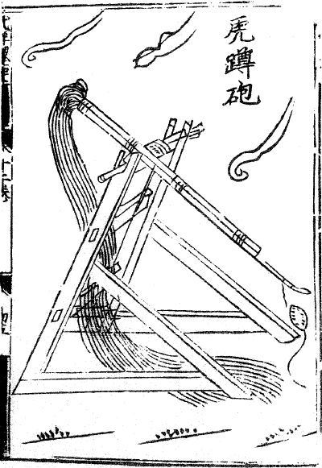
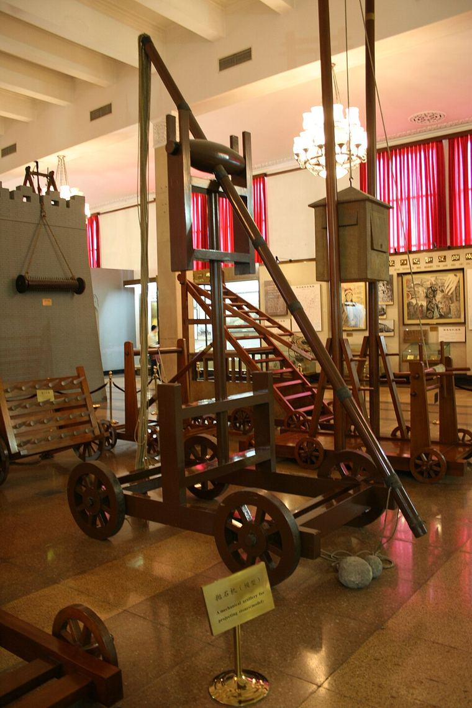
雲梯は、車の上に 長いはしごを 立てて、城の壁に かける道具。 リストの中で いちばん 歴史が 古い。戦国時代の『墨子』という本に もう出てくる。
228年の 陳倉の戦い ②。 諸葛亮が 雲梯と 衝車で せめた。 守っていたのは 郝昭という人で、兵は たった1000人ちょっと。
↑「郝昭は 火の矢を 撃ちかえして 雲梯を 射た。はしごは 燃え、 はしごの上にいた 兵は みんな 焼け死んだ」
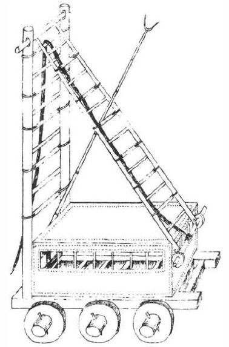
リストの中で、1つだけ どうしても 分からないものが あった。「とう車」。
「とうしゃ」と読める漢字が 3つあって、どれかによって 話が 正反対になる。
| 漢字 | どんな道具 | いつの本に出てくる |
|---|---|---|
| 衝車 しょうしゃ | 丸太で 門を ドンドン突いて 破る （せめる がわ） | ✅ 三国志の記録にある ② |
| 撞車 とうしゃ | 上から 振りおろして、かけられた はしごを たたき折る （まもる がわ） | ❌ ずっと あとの本だけ ③ |
| 頭車 とうしゃ | 屋根つきの 箱。トンネルを 掘る兵を まもる | ❌ ずっと あとの本だけ ③ |
読み方だけで決めると、下の2つになる。「とうしゃ」と読むんだから。 そして それだと 三国志には 無い道具ということになって、答えが ひっくり返る。
その衝車、じつは こわされた記録も ある。さっきの 陳倉の戦い。 郝昭は 雲梯を 焼いたあと、こんどは 衝車を つぶした。
↑「郝昭は こんどは 縄で 石うす（石のひきうす）を つないで つるし、 衝車の上に 落として つぶした。衝車は 折れた」
投石機じゃない。その辺にあった 重たいものを 縄で つるして 落としただけ。 こういう「ありもので なんとかする」ところが、記録の おもしろさ。
井闌は 城の壁より 高い 動く やぐら。
壁を こわすためじゃなくて、上に 弓の兵を のせて、城の中を 見下ろして 射るための道具。
陳倉では 諸葛亮が 100尺（30mぐらい）の井闌を 作った ②。
郝昭の 手は こうだった——城の 内がわに、もう1まい 壁を 建てた。見下ろされても 意味がなくなる。
リストの「幔」（木幔）。四輪車に はねつるべを 立てて、 牛の皮を はった 大きな たてを つるし上げ下げして、矢を ふせぎながら 壁に 取りつく道具。
だから ゆうじんのリストの中で、幔だけが「三国志の兵器」とは 言えない。 本に のっていたということは、その本が 「三国志っぽい昔の中国の兵器」を まとめて のせたということ。 ——これも、悪いことじゃない。ただ、そうだと 知っておくだけ。
ゆうじんが あとから 足した注文に「火矢隊も」があった。これも 調べた。
これが いちばん おどろいた。火のついた矢を 射ても、一発では 燃えない。 唐の教科書には、こう 書いてある。
ゲームだと 火矢が当たると ドカンと 爆発することが ある。三国志の時代には、それは 無い。
同じ「火箭」という漢字が、あとの時代に ロケットのことも 指すようになったから （いまの中国語で「火箭」＝ロケット）、ごっちゃに なりやすい。
いちばん有名な 赤壁の戦い（208年）。 火矢を 雨のように 射かけて 曹操の船を 焼いた——という絵を よく見る。 記録を 読むと、そう 書いていない。
↑「蒙衝・闘艦を 数十せき 取り、 たきぎと草を いっぱいに つめて、その中に 油を そそいだ… 黄蓋が 船を 放ち、いっせいに 火を つけた」
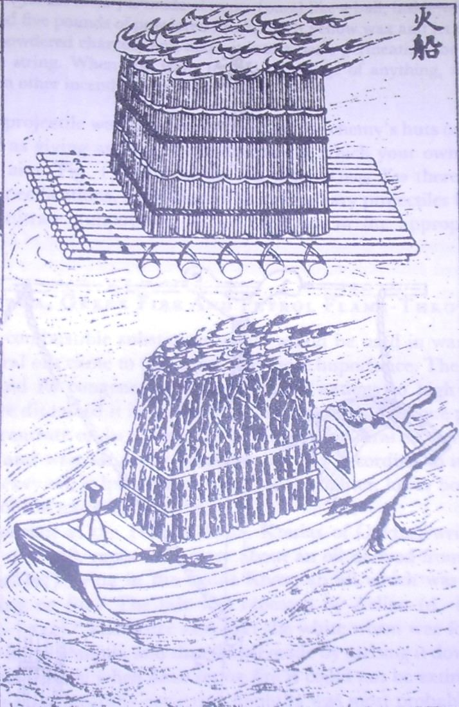
ゆうじんの注文「連弩 と軍馬」。
連弩は、矢が つぎつぎ 出る 弩。
諸葛亮が 発明した すごい秘密兵器、というイメージが ある。
調べたら、3つとも ちがった。
記録の本文（いちばん たしかな ①）に 書いてあるのは、たった これだけ。
↑「諸葛亮は くふうが とくいな 人で、連弩を 損益し、木牛流馬も 考え出した」
「損益」＝ へらしたり 足したり ＝ 直した、という意味。 「作った」とは 書いていない。
そして、連弩そのものは 諸葛亮より 400年以上 前から あった。
| いつ | 何が あったか |
|---|---|
| 前210年 | 『史記』に、秦の始皇帝が 自分で 連弩を かまえて 大きな魚を 撃ったと ある |
| 前99年 | 『漢書』に、李陵が 連弩で 敵の王を 撃った と ある |
| 前漢 | 宮中の 本のリストに「望遠連弩射法 15巻」＝連弩の 撃ち方の 専門書が 15巻も あった |
| 戦国時代 | お墓から 本物が 出てきている（矢の箱に 18本 入る 小さい連弩） |
17世紀（江戸時代ごろ）の中国の学者も、もう 同じことを 書いている。 「諸葛亮から 始まったのではない。秦の始皇帝が 自分で 連弩で 魚を 撃っている」（『通雅』）。 ——350年前に すでに 気づかれていた話を、いまも くりかえしている。
これが いちばん おどろいた。 じっさいの連弩を 見て さわった むかしの中国の人が、感想を 書きのこしている。
| 本 | 書いてあること |
|---|---|
| 『天工開物』（明） | 「みぞを 刻んで 矢を10本 入れる…しかけは よくできているが、力が とても 弱い。20歩あまりしか とどかない。 これは 家の どろぼうよけの 道具で、軍隊の 武器ではない」 |
| 『通雅』（明のおわり） | 「ただ 力が 小さく、近くしか とどかない」 |
| 『思辨録』（清） | 「10歩の中でも うすい絹すら やぶれない。これは 子どもの おもちゃだ」 |
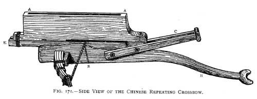
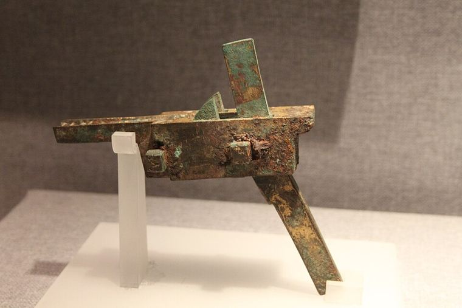
いちばん たしかな 本文 ①の中で、 連弩が じっさいに 撃たれている 場面は たった1つ。 それが——魏の軍が、238年に 襄平という城を せめたとき。 諸葛亮が 死んで 4年あと。
ゆうじんのリストの 後半4つ。
楼船・走舸・蒙衝・闘艦。
4つとも、記録の本文に ちゃんと 出てくる言葉 ①。そこは 合っている。
でも——「この4種類に 分ける」という 分けかた自体が、あとの時代のもの ③。
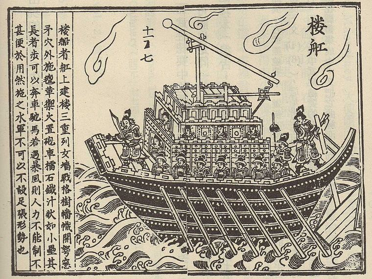
いちばん イメージが ひっくり返ったのが これ。
ふつう「蒙衝＝ 皮で おおった 速い船で、先の角で 敵船を 突きやぶる」と 説明される。
三国志の本文に 出てくる 蒙衝は、まるで ちがった。
↑「黄祖は 蒙衝を 2せき、横向きに ならべて 川の入口を ふさぎ、 しゅろの 太い縄で 石に つないで いかりにした。上には 1000人がいて、弩を 雨のように 撃った」
蒙衝は 動いていない。ぴたっと 止まって 川を ふさぐ「浮かぶ 関所」だった。
突っこんだのは、攻めてきた ほうの 大舸船。
「速い装甲艇」のイメージは、後漢の辞書（突っこむ船）と 唐の教科書（皮を はった 速い船）を
くっつけて 作ったもの。どちらか 一方だけでは そうならない。
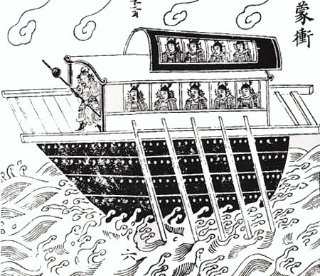
本文で 走舸が 使われている場面は 2つ。2つとも「逃げる・助ける」。
その 濡須の夜、部下が 「董襲さま、走舸に お乗りください」と さけんだ。 董襲は 「持ち場を まもれと 命じられている。つぎに 言う者は 斬る」と 言って、船と ともに 死んだ。 ——物語じゃなくて、記録のほうに 書いてある話。
いちばん 古い 漢字の辞書『説文解字』に、こう 書いてある。
↑「城とは、民（たみ）を 入れておく ものである」
日本の城（戦うための 建物）とは 別物。 中国の城は、町ぜんたいを ぐるっと 壁で かこんだもの。 だから 中に 家がある。市場もある。役所もある。
だから 「城を落とす」は「とりでを つぶす」じゃなくて「町を まるごと 取る」ということ。 記録に こんな 場面が 出てくる。
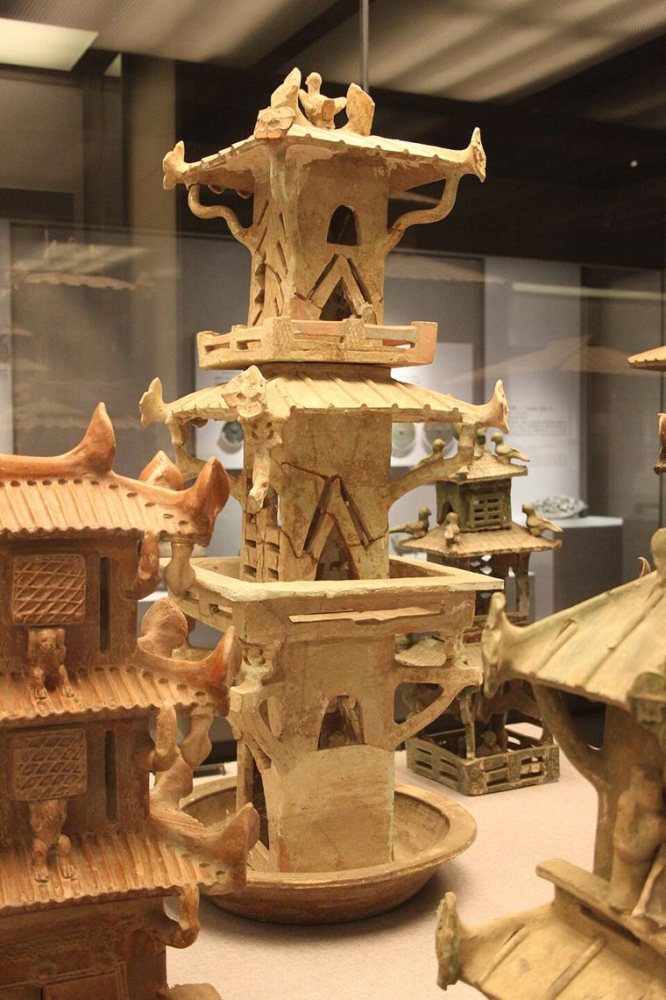
「中国の城は 四角が 基本」と よく 言われる。 たしかに『周礼』という 古い本には「方九里、まわりに 3つずつ 門」と 書いてある。 でも それは「お手本の 設計図」。
同じくらい 古い『管子』という本に、正面から こう 書いてある。
↑「城の かたちは 定規に 合わせなくて いい。道も まっすぐで なくて いい」 ＝土地に 合わせて 作れ、ということ。
| 城 | どんな形／なぜ |
|---|---|
| 漢の都 長安 | 四角じゃない。「南は 南斗の形、北は 北斗の形」＝ひしゃくの形。 だから「斗城」と 呼ばれた。帝国の 首都が 四角くない。 |
| 合肥新城（233年）① | 元の城は 川や湖に 近くて、船で 攻められるのが いやだった。
そこで 30里（約12km）内陸の けわしい 場所に、城ごと 建て直した。 ＝城の 場所と 形は、敵で 決まる。 |
| 石頭城（212年）① | 孫権が 岩山 そのものを 城にした。 |
石垣でも レンガでもない。土を どんどん つき固めて 積み上げた 壁（版築）。
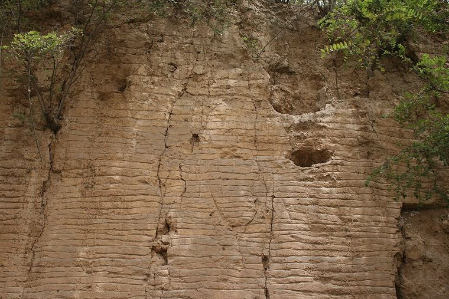
219年、樊城が 大水で 沈んだときの 記録は、こう 書く。
↑「漢水が あふれ…沈まずに 残った城壁は 数『板』だった」
——「板」は この わく 1段ぶん。壁の 高さを「板 何段」で 数えている。
土の壁だと 知っていないと 出てこない 言い方。
ゲームや イラストで よく見る かざりのうち、『三国志』を さがしても 1件も 出てこないものが ある。
| よく見るもの | 『三国志』に | いちばん古く 見つかった記録 |
|---|---|---|
| 甕城（門の外の 二重の囲い） | 0件 | 1068〜1077年から ③ |
| 馬面（壁から 出っぱった 台） | 0件 | 1044年 ③ |
| 女牆（上の ギザギザ） | 0件 | 801年 ③ |
| 角楼（すみの やぐら） | 0件 | 見つけられなかった |
| （たしかめ用）城門 | 61件 | —— |
| （たしかめ用）塢 | 34件 | —— |
↑下の2行は「さがす道具が ちゃんと 動いているか」を たしかめるために 入れてある。 これが 0件だったら、上の 0件は「無い」じゃなくて「さがせていない」ということになる。 ——これは 大事な手なので、7章で もう一度 書く。
228年の 陳倉。郝昭の兵は 1000人ちょっと。せめる 諸葛亮は 何万人。 それでも 20日以上 守りきって、諸葛亮は 引き上げた。 どう 守ったか——4つ、ぜんぶ ちがう手だった ②。
| 諸葛亮の 手 | 郝昭の かえし |
|---|---|
| 🪜 雲梯を 壁に かける | 🔥 火の矢で 焼く。はしごの上の 兵は みんな 焼け死んだ |
| 🪵 衝車で 門を 突く | 🪨 縄で 石うすを つるして 落とす。衝車は 折れた |
| 🗼 井闌（30mの やぐら）で 見下ろして 射る | 🧱 内がわに もう1まい 壁を 建てる |
| ⛏ トンネルを 掘って 城内に 出る | 🕳 城の中から 横に 掘って、断ち切る |
これも おもしろかった。壁の 耐久度が 0になって 落ちる、という話が あまり 無い。
ゆうじんの注文「軍馬」。ここが、ゲームの絵が いちばん 分かれるところだった。
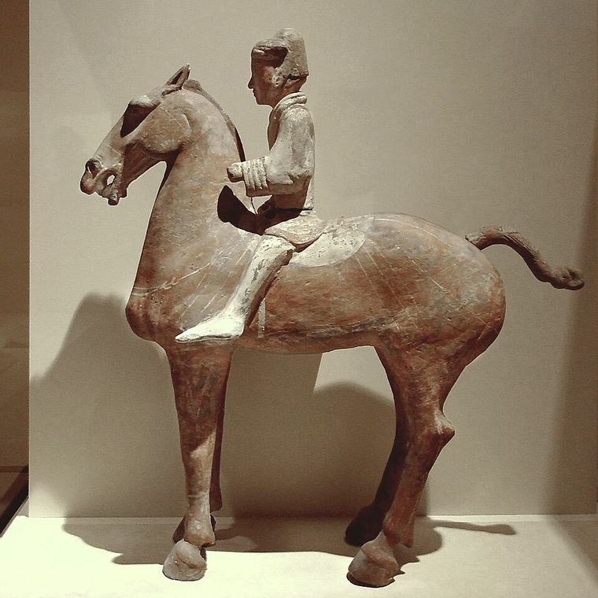
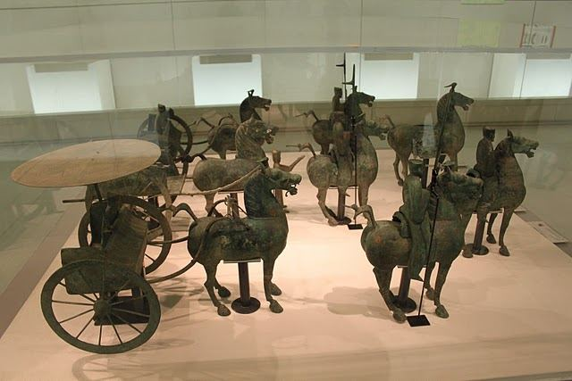
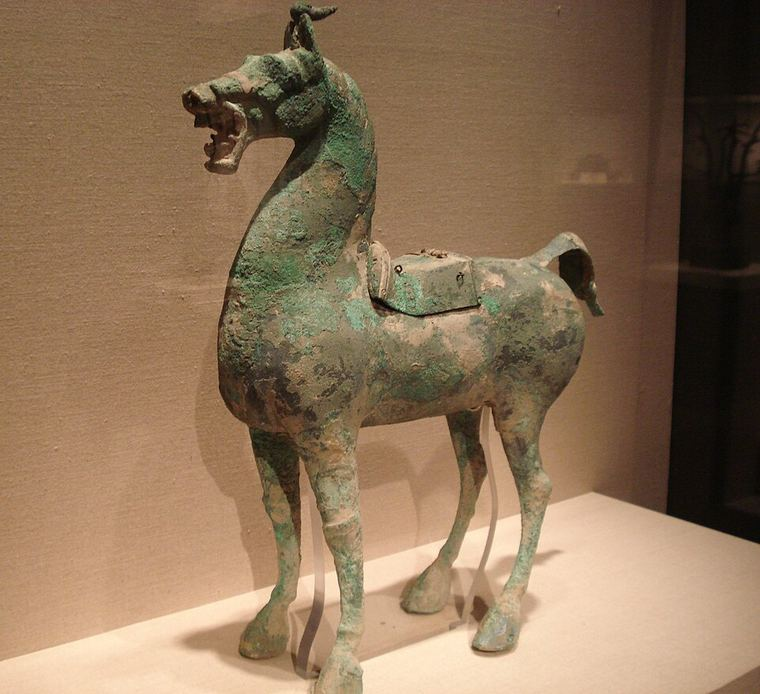
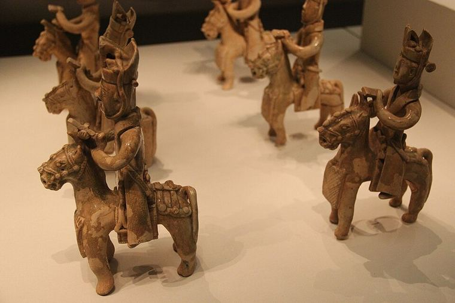
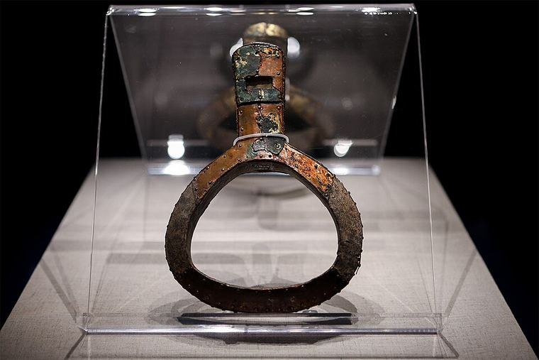
| いつ | あぶみ | 三国志（220〜280年）から |
|---|---|---|
| 〜後漢 | 無い | 三国志の 前 |
| 271年（東呉） ⚠ この年は まだ もめている（→9章） | 片っぽだけ（左に1つ・三角） | 三国志の 中！ |
| 302年（西晋） | 片っぽだけ | 22年あと |
| 322年ごろ（東晋） | 両がわ そろう（いちばん古い） | おわり（280年）から 42年あと 赤壁（208年）からは 114年あと |
| 415年（北燕） | 両がわ・実物が のこっている | 135年あと |
しかも、発表した人たち 自身が こう 書いている—— 「これは 片がわだけの あぶみで、馬に 乗るときの 補助の 道具。 乗ってしまったら、これを 踏まないし、体を ささえるのにも 使わない」。
もうひとつ。『三国志』ぜんぶを さがしても「鐙」という 漢字が 1回も 出てこない。 （三国志の となりの 国の 装備リストも「弓・矢・鞍・くつわ」で 止まっていて、あぶみが 無い。）
「あぶみが無いから 馬の上では 戦えなかった」という 逆向きの まちがいも よく ある。 記録の本文が それを 否定する。
| だれ | 本文に 書いてあること ① |
|---|---|
| 丁奉 | 「馬に またがり 矛を持って、敵の 陣の中へ 突っこんだ」 |
| 関羽 | 「馬を 走らせて、何万の 中で 顔良を 刺し、首を取って 帰った」 |
| 董卓 | 「弓ぶくろを 左右 2つ 帯び、馬を 走らせながら 左にも 右にも 射た」 |
| 呂布 | 「弓も 馬も うまく、力は 人なみはずれ、飛将と よばれた」 |
いま いちばん 安全な 線： 「馬の上で 戦えた。ただし 主な 戦い方は 動き回ることと 馬の上から 弓を 射ることで、 正面から 重い騎兵で 突きくずす 戦い方 ではない」。
↑「呂布には 赤兔という 名馬が いた。 いつも 側近の 成廉・魏越たちと 敵の 先頭に 切りこみ、陣を 突きやぶり、燕の軍を 破った」
公孫瓚の 白馬義従——
白い馬だけを 数千頭 えらび、弓のうまい兵を 乗せた 精鋭部隊。かっこいい。
その 同じ記録の すぐあとに、こう 書いてある。
↑ 界橋の戦いで、 麴義が 歩兵 800人を 先頭に 立てて、公孫瓚の軍を 破った。
「正史に 一騎打ちは 無い」と よく 言われる。これも まちがい。ある。 ただし——見つかった 2件とも、勝負が つかずに おわっている。
太史慈 × 孫策（神亭）①
↑「孫策は 太史慈の 馬を 刺し、太史慈の 首のうしろの 手戟を もぎ取った。
太史慈も 孫策の かぶとを もぎ取った。」
そこへ 両方の 兵が かけつけてきて、そのまま 別れた。
ぜんぜん 決着していない。取ったのは 相手の かぶと。 しかも 太史慈は 1人、孫策は 13騎 連れていた（＝1対14の でくわし戦）。
じつは この ページで いちばん 役に立つのは、兵器の話 じゃないかもしれない。 どうやって たしかめたかのほう。これは 三国志いがいでも 使える。
「とう車」。読み方から せめると まちがえるところだった。
ゆうじんに「本の絵は どれ？」と 聞いたら、一発で 決まった。
言葉より 絵のほうが 速いことが ある。
「投石車」で さがしたら 0件だった。ここで「三国志に 投石車は 無い」と 言いたくなる。
でも その前に、「當たるはずの言葉」で 引いてみた。
「發石車」→88件。「木幔」→47件。＝道具は ちゃんと 動いている。
だから「0件」は 信じていい。
もし こっちも 0件だったら、「無い」んじゃなくて「さがせていない」だった。
使ったのは インターネットの 図書館。そこに 入っていない本も ある。 じっさい、明の兵書『武備志』は 本文が 入っていなかった。 ＝この 0件たちの 限界を、自分で 証明してしまった。
火矢のところ。最初に とってきた文は
「亮於是以火箭逆射其雲梯」（＝諸葛亮が 火矢で 雲梯を 射た）だった。
おかしい。雲梯は 諸葛亮 自身の 道具。自分の はしごを 焼いて どうする？
もとの文を 直接 開いて 読み直したら、正しくは 「昭」（＝郝昭＝守る側）だった。
1文字で 話が 正反対に なる。
このページに 出てきた「じつは ちがった」は、ほとんど
「かっこいい話に なるほうへ 話が 育っている」。
連弩は「弱い」→「すごい連射兵器」に。蒙衝は「止まっている関所」→「速い装甲艇」に。
走舸は「逃げる船」→「偵察の快速艇」に。
おもしろい方向に ずれる。これは 覚えておくと 強い。
「Aより Bが あとだから ちがう」と 言うには、AとB、両方の年が 要る。 片方が「たぶん」なら、その 否定は 成り立たない。
いちばん 大事な手。つぎが これ。
ここまで えらそうに 書いてきたけど、たしかめられなかったことも たくさん ある。 かくさずに 書いておく。そのほうが、あとで 見なおすときに 役に立つ。
このページは 監督（ゆうじん）用。
調べたことを「じゃあ ゲームを どうするか」に 変えたもの。
友だちが 読んでも いいけど、読みものは 左のタブのほう。
| ゲームの中身 | どの記録から |
|---|---|
| 🏯 城が 4つ（本城2・支城2） | ゆうじん「城はいくもあって」＋記録どおり |
| 🏯 城ごとに 形が ちがう（四角で門2／横長／たて長／二重の壁） | 『管子』「城の形は 定規に 合わせなくていい」／長安＝ひしゃくの形／合肥は 12km 引っこした |
| 🧱 二重の壁の城 | 陳倉で 郝昭が「内がわに もう1まい 壁を 建てた」 ② |
| 🏘 城の中に 民家・🛡 守備兵 | ゆうじん「城に入ったら民家もある」＝記録どおり。 『説文解字』「城とは 民を 入れるもの」 |
| 🪵 衝車（丸太で 門を 3回 突くと やぶれる） | ゆうじん「丸太で門を叩いてい」で 決まった ② |
| 🏹 矢では 門が こわれない | 記録でも 門を やぶるのは 火か 丸太。矢ではない |
| 🎯 連弩＝速いけど 近くまで | 『天工開物』「力が とても弱い・20歩あまり」。数字の 出どころが 本 |
| 🔥 火矢＝門と衝車に 3倍きく | 記録の2回とも「相手の 木の道具を 焼く」ために 使われている |
| 🐴 軍馬 | 丁奉「馬にまたがり 矛を持って 突っこんだ」 ① |
| 📚 はじめて使ったとき 出どころの 解説が出る | （投石車＝發石車 と 同じやり方） |
ぜんぶ 記録に 書いてあることから 作れるもの。どれから やるか、決めてほしい。
番号＋アルファベットで 答えてくれると 助かる（例：1A 3B）。